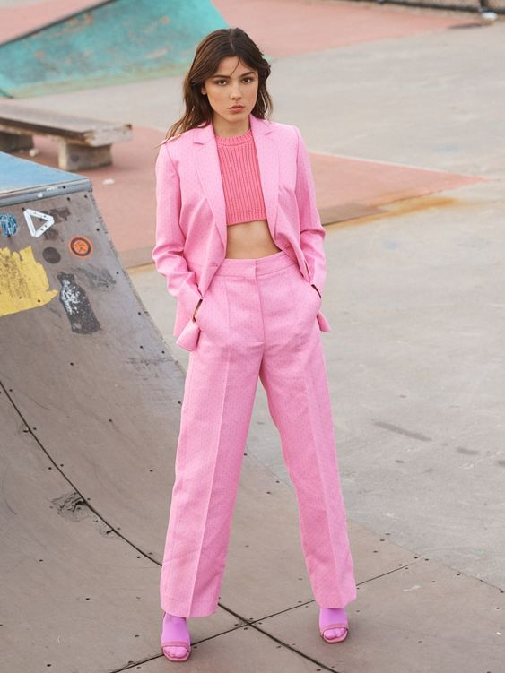
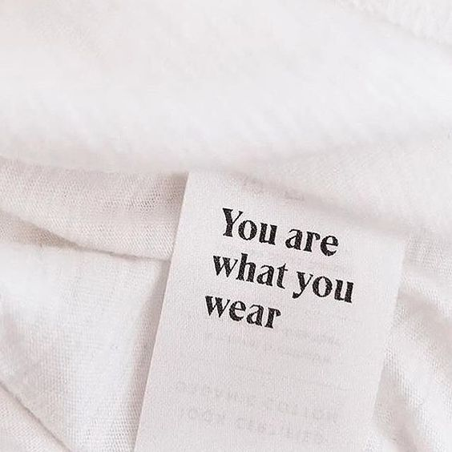

Hey fashionistas, I am Margaux!

As a student at IESEG, School of Management, in Digital Marketing, I created Beyond Retro with three friends in order to reduce the consumption of fast fashion and to make consumers buy less, but better. Indeed, I put at the heart of my concerns the respect of the environment and the preservation of the planet. I am also committed to supporting small local producers, sustainable brands and thrift shops.
Discover Beyond RetroMy background
After graduating with honors, I entered IESEG. I went to Finland as an exchange student during my third year, in order to improve my English and to develop my adaptation skills.
Fashion
I have been passionate about fashion since I was young. I am always on the lookout for new trends. Fashion is not only superficial, it is also art. A garment is much more than a piece of fabric, it is a process, an association of materials, colors, shapes, reliefs. An outfit, a garment, an association of color says a lot about a person. We express our personality, our past, our ideals and our aspirations through the way we dress. We can send strong messages through our style.
My engagement
Fast fashion, this disposable and replaceable fashion affects us all. It creates not a need but a desire every two seconds. One day, while watching the report "the underbelly of low cost fashion", I had a trigger. I wanted to bring some sense back into my daily life by understanding better the reality behind a price, for example. Changing one's way of consuming does not happen overnight. But participating in a more sustainable fashion with Beyond Retro is the first step to engage in slow fashion.